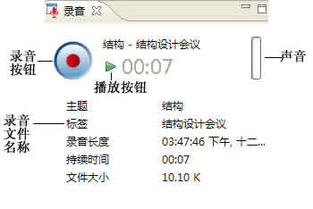
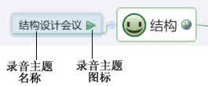

录音能够帮助您在会议、讨论等场合快速记录内容，从而让您可以集中注意力至事情本身。而所有的操作在XMIND中都是十分的简单，方法如下：
按照下列方法开始录音：
- 选中一个主题；
-
下列三种方法均可开始录音：
- 点击录音视图，中的录音按钮。
- 在菜单栏中选择“插入 > 录音”。
- 点击工具栏上的录音按钮。
- 再次点击录音按钮结束录音。

注意：
- 录音完成后，XMIND会自动生成一个MP3文件，这个文件会以当前主题的附件子主题的形式保存。

按照下列步骤播放录音文件：
- 选中录音主题；
-
以下三种方法均可播放录音：
- 点击录音视图中的播放按钮。
- 点击录音主题中的播放键，在右键菜单中选择“打开”。
- 按住Alt键的同时，双击录音主题。
注意：录音主题也是主题，因此您可以按照主题的操作方法来对其进行编辑、移动乃至删除。
您可能还对下列内容感兴趣……